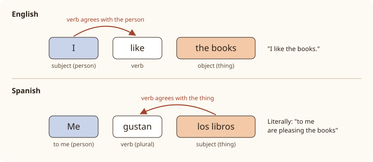

Lesson 12: Likes and Dislikes with gustar¶
Gustos y aficiones
"I like football", "I love chocolate", "my head hurts": to say these things in Spanish you need a verb that works back to front. In English, I like the film. In Spanish, the film pleases me: me gusta la película. You met me gusta as a phrase in the café in Lesson 8. This lesson takes it apart, shows you how to say what other people like, how to agree and disagree, and introduces the family of verbs that work the same way: encantar, interesar, molestar and doler. Along the way you learn to talk about hobbies and free time.
Learning outcomes
By the end of this lesson you will be able to:
- say what you like and dislike, and how much, with gustar and encantar;
- choose between gusta and gustan;
- use the indirect object pronouns me, te, le, nos, os, les, and make them clear with a mí, a ti, a él, a María;
- agree and disagree with a mí también, a mí tampoco, a mí sí, a mí no;
- talk about hobbies, and use interesar, molestar, doler and preferir.
masculinefeminineplural
12.1 Dialogue: a language exchange¶
Sergio, from Valencia, and Valentina, a Colombian student from Medellín who lives in Valencia, meet every Thursday for an intercambio: half an hour of Spanish, half an hour of English. Today they speak Spanish.
- Valentina: Sergio, ¿qué te gusta hacer en tu tiempo libre? — Sergio, what do you like doing in your free time?
- Sergio: Me gusta mucho leer y me encanta el cine. ¿Y a ti? — I really like reading and I love the cinema. And you?
- Valentina: A mí también me gusta el cine, pero no me gusta mucho leer. Prefiero el deporte. — I like the cinema too, but I don't like reading much. I prefer sport.
- Sergio: ¿Qué deportes te gustan? — What sports do you like?
- Valentina: Me encanta el fútbol. Juego con unas amigas los sábados. — I love football. I play with some friends on Saturdays.
- Sergio: A mí no me gustan los deportes de equipo, pero me encanta nadar. — I don't like team sports, but I love swimming.
- Valentina: ¿Y te gustan las películas de terror? — And do you like horror films?
- Sergio: No, no me gustan nada. Prefiero las comedias. — No, I don't like them at all. I prefer comedies.
- Valentina: A mí tampoco. ¿Y qué música te gusta? — Me neither. And what music do you like?
- Sergio: Me gustan el flamenco y el rock. Toco la guitarra. — I like flamenco and rock. I play the guitar.
- Valentina: ¡Qué casualidad! A mi hermano le encanta el rock, y le interesa mucho la guitarra flamenca. — What a coincidence! My brother loves rock, and he's very interested in flamenco guitar.
- Sergio: Pues hay un concierto el viernes. ¿Vamos los tres? — Well, there's a concert on Friday. Shall we all three go?
- Valentina: ¡Me encantaría! — I'd love to!
Notice:
- me gusta with one thing or an activity (me gusta leer, me gusta el cine), but me gustan with several things (me gustan los deportes). The verb agrees with the thing liked, not with the person.
- To say what another person likes, the pronoun changes: le encanta el rock, "he loves rock".
- Agreeing uses a mí, not yo: A mí también, A mí tampoco.
- ¡Me encantaría! ("I would love to!") is a fixed phrase for accepting an invitation. You will meet its tense, the conditional, after this course.
12.2 Vocabulary: hobbies and free time¶
Activities¶
| Spanish | Sounds like | English |
|---|---|---|
| leer | [leh-EHR] | to read |
| escuchar música | [ehs-koo-CHAR MOO-see-kah] | to listen to music |
| ver series | [behr SEH-ryehs] | to watch series |
| ver la tele | [behr lah TEH-leh] | to watch TV |
| ir al cine | [eer ahl SEE-neh] | to go to the cinema |
| bailar | [bye-LAR] | to dance |
| cantar | [kahn-TAR] | to sing |
| cocinar | [koh-see-NAR] | to cook |
| nadar | [nah-DAR] | to swim |
| correr | [koh-RREHR] | to run |
| viajar | [byah-HAR] | to travel |
| pintar | [peen-TAR] | to paint |
| sacar fotos | [sah-KAR FOH-tohs] | to take photos |
| salir con amigos | [sah-LEER kohn ah-MEE-gohs] | to go out with friends |
| hacer deporte | [ah-SEHR deh-POR-teh] | to do sport |
| jugar al fútbol | [hoo-GAR ahl FOOT-bohl] | to play football |
| jugar a los videojuegos | [hoo-GAR ah lohs bee-deh-oh-HWEH-gohs] | to play video games |
| tocar la guitarra | [toh-KAR lah gee-TAH-rrah] | to play the guitar |
| tocar el piano | [toh-KAR ehl PYAH-noh] | to play the piano |
Table 12.1. Free-time activities. In Spain you will also hear hacer fotos, and in much of Latin America tomar fotos.
Things to like¶
| Spanish | English |
|---|---|
| el cine | the cinema |
| la música | music |
| el deporte | sport |
| el fútbol / el baloncesto / el tenis | football / basketball / tennis |
| la naturaleza | nature |
| el arte | art |
| los libros | books |
| las películas (de acción, de terror) | films (action, horror) |
| las comedias | comedies |
| los animales | animals |
| el tiempo libre | free time |
| la afición / el pasatiempo | hobby, pastime |
Table 12.2. Nouns for likes and hobbies. In much of Latin America basketball is el básquetbol.
Jugar and tocar: two ways to "play"¶
English "play" is two verbs in Spanish. You jugar a game or a sport, and you tocar ("touch") a musical instrument.
- Juego al tenis. — I play tennis.
- Toco el violín. — I play the violin.
jugar has a stem change of its own, u→ue, the only verb with this pattern. It behaves like the o→ue verbs of Lesson 10:
| Person | jugar (u→ue) |
|---|---|
| yo | juego |
| tú | juegas |
| él, ella, usted | juega |
| nosotros, nosotras | jugamos |
| vosotros, vosotras | jugáis |
| ellos, ellas, ustedes | juegan |
Table 12.3. The verb jugar.
Jugar al fútbol or jugar fútbol?
In Spain you always say jugar al fútbol, jugar al tenis (a + el = al). In much of Latin America, including Mexico, people often leave out the article and preposition: jugar fútbol. Both are correct in their regions.
12.3 Grammar: how gustar works¶
Back to front¶
gustar means "to please" or "to be pleasing". So Me gusta el café is, word for word, "To me is pleasing the coffee". The thing you like is the grammatical subject, and the person who likes it is an indirect object ("to me").

This has two consequences:
- The verb agrees with the thing, not the person. In practice you need only two forms: gusta for one thing or for activities, gustan for several things.
- The person is shown by a pronoun before the verb: me, te, le and so on.
Gusta or gustan?¶
| You like … | Form | Example |
|---|---|---|
| one thing (singular noun) | gusta | Me gusta el chocolate. — I like chocolate. |
| several things (plural noun) | gustan | Me gustan los gatos. — I like cats. |
| an activity (infinitive) | gusta | Me gusta bailar. — I like dancing. |
| several activities | gusta | Me gusta cantar y bailar. — I like singing and dancing. |
| two singular nouns | gustan | Me gustan el té y el café. — I like tea and coffee. |
Table 12.4. Choosing gusta or gustan. Infinitives always take gusta, however many there are.
Common mistake: forgetting the article
With gustar, a noun almost always needs its article, because you are talking about the thing in general: Me gusta el café, Me gustan los perros. Me gusta café is wrong, though English says "I like coffee" without "the".
The indirect object pronouns¶
The pronoun in front of gustar shows who likes the thing. These indirect object pronouns mean "to me, to you, to him …". Four of them are the same as the reflexive pronouns of Lesson 11; only the third person is different: le, les instead of se.
| Who likes it | Pronoun | One thing | Several things |
|---|---|---|---|
| (a mí) | me | me gusta | me gustan |
| (a ti) | te | te gusta | te gustan |
| (a él, a ella, a usted) | le | le gusta | le gustan |
| (a nosotros, a nosotras) | nos | nos gusta | nos gustan |
| (a vosotros, a vosotras) | os | os gusta | os gustan |
| (a ellos, a ellas, a ustedes) | les | les gusta | les gustan |
Table 12.5. Gustar with the indirect object pronouns. Practice hides the pronoun.
- ¿Te gusta la pizza? — Do you like pizza?
- Nos gusta mucho viajar. — We love travelling. (We like travelling a lot.)
- A mis padres les gustan las películas antiguas. — My parents like old films.
- ¿Le gusta el vino tinto, señora? — Do you like red wine, madam?
Negatives and questions¶
The word no goes before the pronoun, never between the pronoun and the verb:
- No me gusta el fútbol. — I don't like football. (never Me no gusta)
- ¿No te gustan las fresas? — Don't you like strawberries?
A question has the same words as a statement; only the intonation and the question marks change: ¿Te gusta el café? To ask what someone likes: ¿Qué te gusta hacer? or ¿Qué música te gusta?
How much?¶
| Spanish | English |
|---|---|
| Me encanta el chocolate. | I love chocolate. |
| Me gusta mucho el chocolate. | I really like chocolate. |
| Me gusta el chocolate. | I like chocolate. |
| Me gusta bastante el chocolate. | I quite like chocolate. |
| No me gusta mucho el chocolate. | I don't like chocolate much. |
| No me gusta nada el chocolate. | I don't like chocolate at all. |
| Odio el chocolate. | I hate chocolate. |
Table 12.6. A scale from love to hate. Odiar ("to hate") is an ordinary -ar verb: odio, odias, odia …
Common mistake: encantar mucho
encantar already means "to like a lot", so it is not used with mucho: say Me encanta el cine, not Me encanta mucho el cine. Like gustar, it agrees with the thing: Me encantan los gatos.
12.4 Grammar: a mí, agreeing, and other verbs like gustar¶
Making it clear: a mí, a ti, a él, a María¶
le gusta can mean "he likes", "she likes" or "you (usted) like". To make it clear, add a + the person:
- A él le gusta el jazz. — He likes jazz.
- A ella le gusta el rock. — She likes rock.
- A usted le gusta la ópera. — You like opera.
- A María le gustan las novelas. — María likes novels.
- A mis amigos les gusta salir. — My friends like going out.
Notice that the pronoun le or les stays, even when the person is named. A María gustan las novelas is wrong; Spanish wants both a María and le.
With me, te, nos and os there is no confusion, so a mí, a ti, a nosotros, a vosotros are used only for emphasis or contrast:
- A mí me gusta el té, pero a ti te gusta el café. — I like tea, but you like coffee.
Note the accent on mí ("me") to tell it from mi ("my"). ti never has an accent.
Agreeing and disagreeing¶
Because the person in a gustar sentence is "to me", short answers use a mí, not yo. Be careful: when the first sentence is negative, the words change.
| Someone says | You agree | You disagree |
|---|---|---|
| Me gusta el teatro. | A mí también. (me too) | A mí no. (not me) |
| No me gusta el teatro. | A mí tampoco. (me neither) | A mí sí. (I do) |
| Juego al tenis. | Yo también. | Yo no. |
| No juego al tenis. | Yo tampoco. | Yo sí. |
Table 12.7. Short answers. Gustar-type verbs take a mí; ordinary verbs take yo.
You can do the same for other people: A mi hermana también ("my sister does too"), A nosotros tampoco ("we don't either").
Common mistake: yo también with gustar
After Me encanta la playa, answer A mí también, not Yo también. You will hear yo también from some native speakers in relaxed speech, but a mí también is the correct form and the one to learn.
Other verbs that work like gustar¶
| Verb | Meaning | Example |
|---|---|---|
| encantar | to love (things, activities) | Me encanta la playa. — I love the beach. |
| interesar | to interest | Nos interesa la historia. — We're interested in history. |
| molestar | to bother, annoy | Me molesta el ruido. — Noise bothers me. |
| importar | to matter | No me importa. — I don't mind. It doesn't matter to me. |
| doler (o→ue) | to hurt | Me duele la cabeza. — My head hurts. I have a headache. |
Table 12.8. Verbs of the gustar type. All of them agree with the thing, not with the person.
doler is very useful at the doctor's or the chemist's. Like other verbs of this type, it is used mostly in two forms, duele and duelen, and it takes the article with the body part:
- Me duele el estómago. — I have a stomach ache.
- Me duelen los pies. — My feet hurt.
- ¿Te duele la espalda? — Does your back hurt?
- A mi hijo le duele una muela. — My son has toothache. (una muela = a back tooth)
Gustar with people
Me gusta Ana usually means more than "I like Ana": it suggests you find her attractive. To say you like someone as a person, use caer bien, another verb of the gustar type: Ana me cae bien, "I like Ana, I get on with her"; Tu jefe me cae mal, "I don't like your boss".
Preferir: a normal verb¶
preferir ("to prefer") is not a gustar-type verb: the person is the subject, as in English. It is an e→ie verb like querer.
| Person | preferir (e→ie) |
|---|---|
| yo | prefiero |
| tú | prefieres |
| él, ella, usted | prefiere |
| nosotros, nosotras | preferimos |
| vosotros, vosotras | preferís |
| ellos, ellas, ustedes | prefieren |
Table 12.9. The verb preferir.
- ¿Prefieres el té o el café? — Prefiero el café. — Do you prefer tea or coffee? — I prefer coffee.
- Preferimos ir a la playa. — We'd rather go to the beach.
Worked example: a profile for a language exchange
Write three sentences about Ana for an exchange website: she loves dancing, she likes French films, and noise bothers her.
- Love + an activity → encanta: A Ana le encanta bailar.
- Like + a plural noun → gustan: Le gustan las películas francesas.
- Bother + a singular noun → molesta: Le molesta el ruido.
In each sentence, the verb agrees with what follows it, and the pronoun le shows that it is Ana who likes it.
12.5 Practice¶
Gusta or gustan?¶
Read each sentence aloud and decide why the verb is singular or plural.
- Me gusta la música clásica. — one thing
- Me gustan las canciones de Shakira. — several things
- Nos gusta correr por el parque. — an activity
- ¿Os gustan los museos? — several things
- A Pedro no le gusta cocinar. — an activity
- Les encantan los animales. — several things
Who likes what?¶
| Person | Likes | Spanish |
|---|---|---|
| I | dogs | Me gustan los perros. |
| you (tú) | the sea | Te gusta el mar. |
| my father | reading | A mi padre le gusta leer. |
| we | Mexican food | Nos gusta la comida mexicana. |
| my friends | video games | A mis amigos les gustan los videojuegos. |
| you (usted) | flowers | A usted le gustan las flores. |
Table 12.10. Switch on Practice and write the pronoun and the verb.
Me too, me neither¶
Answer each statement as indicated, aloud, then listen.
- Me encanta el verano. — A mí también. — I love summer. — Me too.
- No me gustan las arañas. — A mí tampoco. — I don't like spiders. — Me neither.
- Me gusta levantarme temprano. — Pues a mí no. — I like getting up early. — Well, I don't.
- No me interesa la política. — A mí sí. — I'm not interested in politics. — I am.
Say it
Tell a partner about your free time: two things you love, two things you like, and one thing you do not like at all. For example:
Me encanta viajar y me encantan los museos. Me gusta cocinar y me gusta la música latina. No me gusta nada el fútbol.
Your partner answers each one with a mí también, a mí no, a mí tampoco or a mí sí.
12.6 Culture: free time in Spain and Latin America¶
Football everywhere. El fútbol is the most popular sport in Spain and in most of Latin America, and the rivalry between big clubs, and between national teams, is a constant topic of conversation. If you want small talk with almost anyone, ask ¿De qué equipo eres?, "Which team do you support?"
Baseball in the Caribbean. In Cuba, the Dominican Republic and Venezuela, and in parts of Mexico and Central America, the favourite sport is el béisbol, and many professional players in the United States come from these countries.
Music and dance. Every region has its own music. Flamenco, with its guitar, singing and dance, comes from Andalusia in southern Spain. Tango was born in the cities of the Río de la Plata, Buenos Aires and Montevideo. Salsa grew from Cuban rhythms, cumbia from Colombia, and reggaeton from Puerto Rico and Panama. In many places dancing is a normal part of a night out, and people of all ages dance at family parties.
Making plans. In Spain the verb for arranging to meet friends is quedar: ¿Quedamos el sábado?, "Shall we meet on Saturday?" In Latin America you are more likely to hear ¿Nos vemos el sábado? or, in Chile, juntarse. Social life happens outdoors and in public: on the main square, in bars and cafés, and on el paseo, the evening stroll through town.
Saying no politely. When someone invites you and you do not want to go, a direct "no" can sound abrupt. Spanish speakers soften it: Me encantaría, pero no puedo ("I'd love to, but I can't") or Gracias, pero no me gusta mucho el teatro.
12.7 Summary¶
Summary
- gustar means "to please": the thing liked is the subject, the person is an indirect object. Me gusta el café = "coffee pleases me".
- Use gusta with one thing or with activities (me gusta bailar), gustan with several things (me gustan los libros). Nouns take the article.
- The indirect object pronouns are me, te, le, nos, os, les. No goes before them: no me gusta.
- Add a él, a ella, a usted, a María to make le and les clear; add a mí, a ti for emphasis. The pronoun stays: A María le gusta.
- Agree and disagree with a mí también / a mí no after a positive sentence, and a mí tampoco / a mí sí after a negative one.
- encantar, interesar, molestar, importar, doler work like gustar: me duele la cabeza, me duelen los pies. preferir (e→ie) is a normal verb. jugar (u→ue) is for games and sports, tocar for instruments.
12.8 Exercises¶
Exercise 1
Complete with gusta or gustan: Me ___ los tomates.
Answer
gustan. Me gustan los tomates. Los tomates is plural.
Exercise 2
Complete with gusta or gustan: ¿Te ___ nadar y correr?
Answer
gusta. ¿Te gusta nadar y correr? Infinitives always take gusta.
Exercise 3
Say "We like the cinema."
Answer
Nos gusta el cine. Nos gusta el cine.
Exercise 4
Complete: A mis abuelos ___ gusta pasear.
Answer
les. A mis abuelos les gusta pasear. Several people: les.
Exercise 5
Your friend says No me gusta el café. You don't like it either. What do you say?
Answer
A mí tampoco. A mí tampoco.
Exercise 6
Your friend says Me encanta la playa. You don't like the beach. What do you say?
Answer
A mí no. A mí no.
Exercise 7
Say "My feet hurt."
Answer
Me duelen los pies. Me duelen los pies. Plural subject, so duelen.
Exercise 8
Correct the mistake: Yo gusto el chocolate.
Answer
Me gusta el chocolate. Me gusta el chocolate. The chocolate is the subject; the person is me.
Exercise 9
Jugar or tocar? (a) ___ el piano; (b) ___ al baloncesto; (c) ___ a las cartas; (d) ___ la batería (the drums). Use the yo form.
Answer
(a) toco el piano; (b) juego al baloncesto; (c) juego a las cartas; (d) toco la batería. Instruments: tocar; games and sports: jugar.
Exercise 10
Write two sentences about Luis: he is interested in art, and he prefers museums to the beach (use preferir … a …).
Answer
A Luis le interesa el arte. Prefiere los museos a la playa. Interesar works like gustar; preferir is a normal verb with Luis as subject.
12.9 Quiz¶
Quiz: likes and dislikes
Exercise 11
A mi hermana le ___ los perros.
- gusta
- gustan
- gusto
- gustas
Answer
gustan
Los perros is plural, so the verb is gustan.
Exercise 12
Someone says "No me gusta el frío." You agree. You say:
- A mí también.
- A mí tampoco.
- A mí sí.
- Yo también.
Answer
A mí tampoco.
After a negative sentence, agreement is a mí tampoco.
Exercise 13
¿___ gusta bailar, señor García?
Hint: usted
Answer
Le / le
Usted takes le.
Exercise 14
Me ___ la cabeza.
Hint: doler, o→ue
Answer
duele
La cabeza is singular, so duele.
Exercise 15
Say "I love music" in Spanish, with encantar.
Answer
Me encanta la música / A mí me encanta la música
Exercise 16
Match the Spanish to the English.
| A | B |
|---|---|
| me interesa | I don't mind |
| me molesta | I like him or her |
| no me importa | I'm interested in |
| me cae bien | it bothers me |
Answer
me interesa — I'm interested in; me molesta — it bothers me; no me importa — I don't mind; me cae bien — I like him or her
Exercise 17
Put the words in order: "My parents like travelling."
Words: A / gusta / mis / viajar. / padres / les
Answer
A mis padres les gusta viajar.
Exercise 18
Tap the wrong word.
A María gusta mucho el teatro.
Answer
Wrong word: gusta.
Corrected: A María le gusta mucho el teatro.
The pronoun le is needed even when the person is named.
Exercise 19
Write what you hear.
Dictation. Have someone read the sentence aloud, then write it down.
Nos encanta ir al cine los domingos.
Answer
Nos encanta ir al cine los domingos.
Exercise 20
Say it aloud.
Me gusta mucho leer, pero prefiero el deporte.
Answer
Say: Me gusta mucho leer, pero prefiero el deporte.